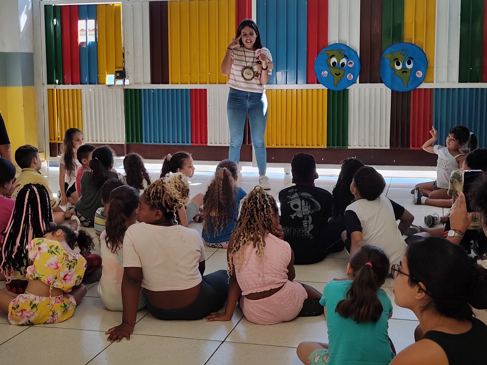
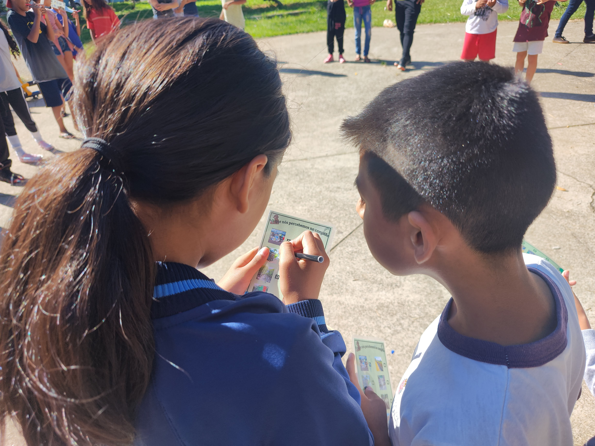
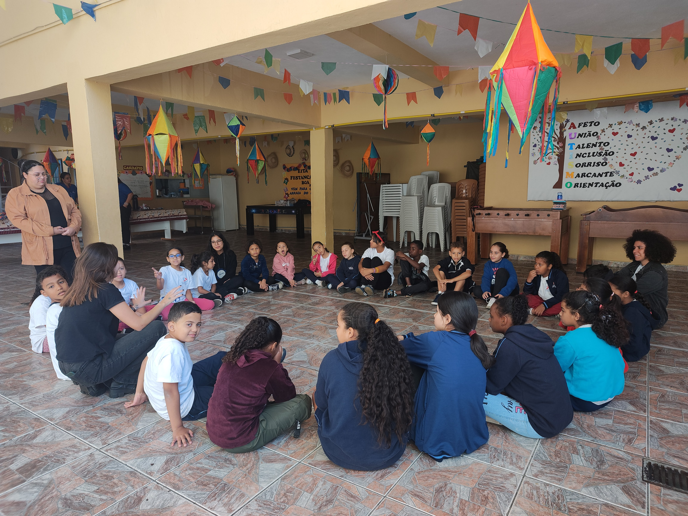
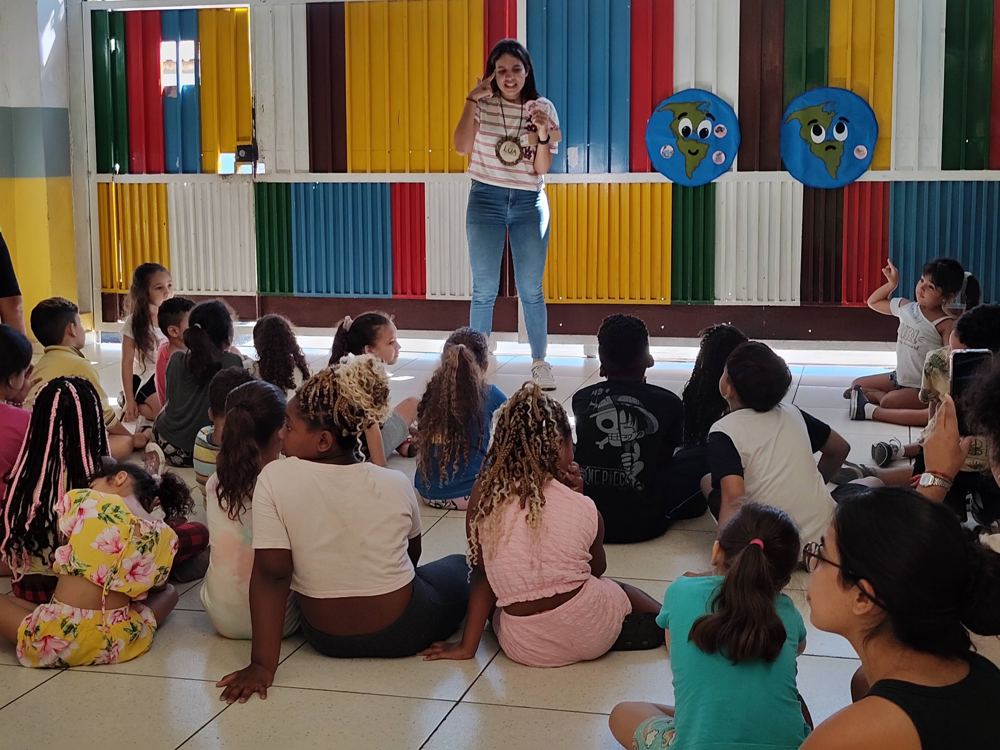
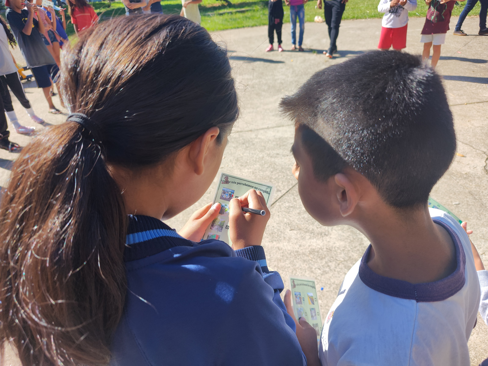
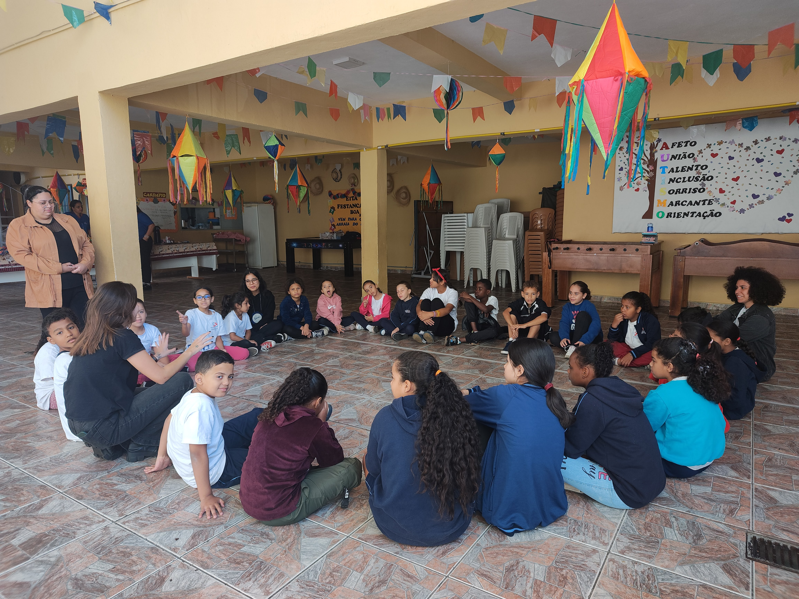

Cartinha da Terra
O projeto Cartinha da Terra nasceu de um sonho: inspirar crianças a cuidarem do meio ambiente, se conectarem com a comunidade da vida e vivenciarem valores que constroem um futuro mais justo, sustentável e pacífico. Inspirado nos princípios da Carta da Terra, um documento ético e visionário acolhido pela UNESCO, o Cartinha oferece uma oportunidade única de sensibilizar crianças para a importância de cuidarmos do planeta e uns dos outros.
Vivências que Inspiram
Mais do que oficinas, o Cartinha da Terra é uma jornada de descobertas sensíveis. A cada encontro, as crianças mergulham em experiências lúdicas e reflexivas, como ouvir histórias, participar da Teia da Vida e perceber como pequenas atitudes podem transformar o mundo ao redor. Pensado para crianças de 6 a 14 anos, o projeto estimula o protagonismo infantil e fortalece vínculos com a natureza, com o território e com os outros.
Respostas Criativas para os Desafios do Nosso Tempo
Diante dos desafios socioambientais do século XXI, o Cartinha da Terra oferece um espaço de sensibilização e aprendizado afetivo. Por meio de práticas que integram cuidado, imaginação e ação, o projeto contribui para a formação de sujeitos críticos, empáticos e comprometidos com a transformação coletiva.
Metodologia Ativa e Participativa
Com encontros planejados de forma cuidadosa e sensível, as crianças vivenciam os princípios da Carta da Terra por meio de atividades lúdicas, criativas e reflexivas. Cada oficina tem duração de 2 horas e convida à escuta, ao brincar e ao agir com propósito. As dinâmicas são pensadas para provocar reflexões que ultrapassam o momento da atividade e reverberam no cotidiano.
Escuta e Adaptação ao Contexto Local
Antes de iniciar as atividades, promovemos uma escuta com a equipe educativa para compreender o território, os públicos atendidos e os objetivos da programação. Essa escuta nos permite adaptar as vivências para que cada grupo tenha uma experiência significativa, conectada à sua realidade e aos valores da instituição.
Impacto que Transforma
Para as Crianças: Florescem empatia, responsabilidade e senso de pertencimento.
Para a Instituição: O Cartinha fortalece a missão educativa e sociocultural da instituição, ampliando sua atuação como espaço de formação integral.
Para as Famílias e Comunidades: As vivências despertam conversas em casa, inspiram novas práticas e contribuem para a formação de redes comunitárias.
Como Funciona?
- 1ª Etapa: Visita pedagógica para planejamento e alinhamento.
- 2ª Etapa: Quatro vivências com as crianças, de 2 horas cada.
- 3ª Etapa: Fechamento com reflexões e construção de compromissos coletivos.
Galeria de Vivências
 




